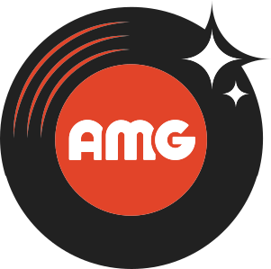
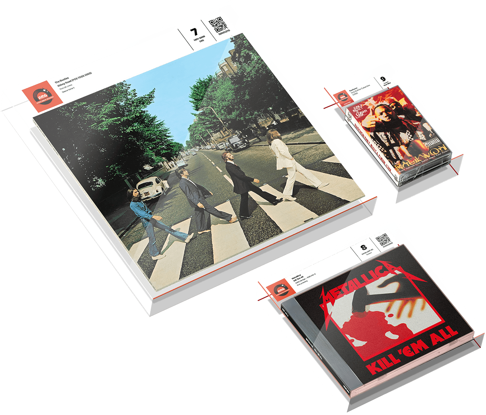
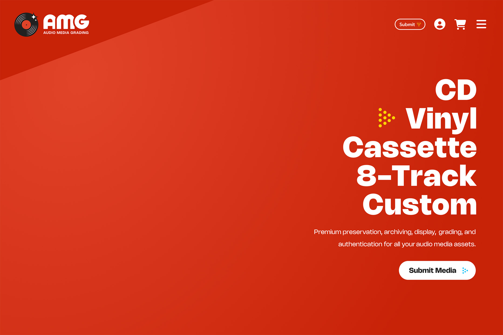
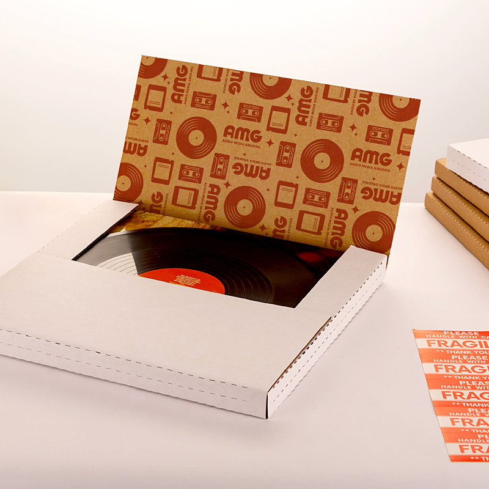
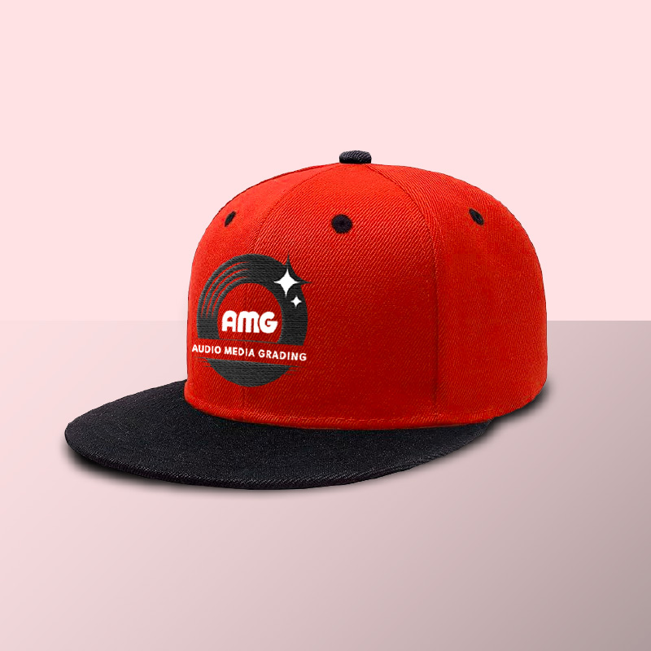
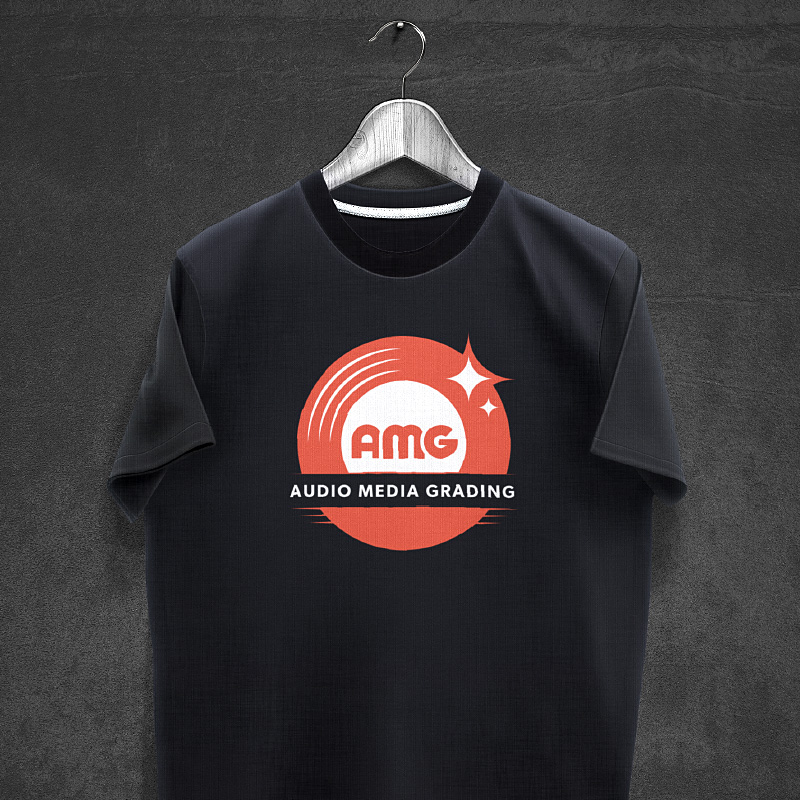
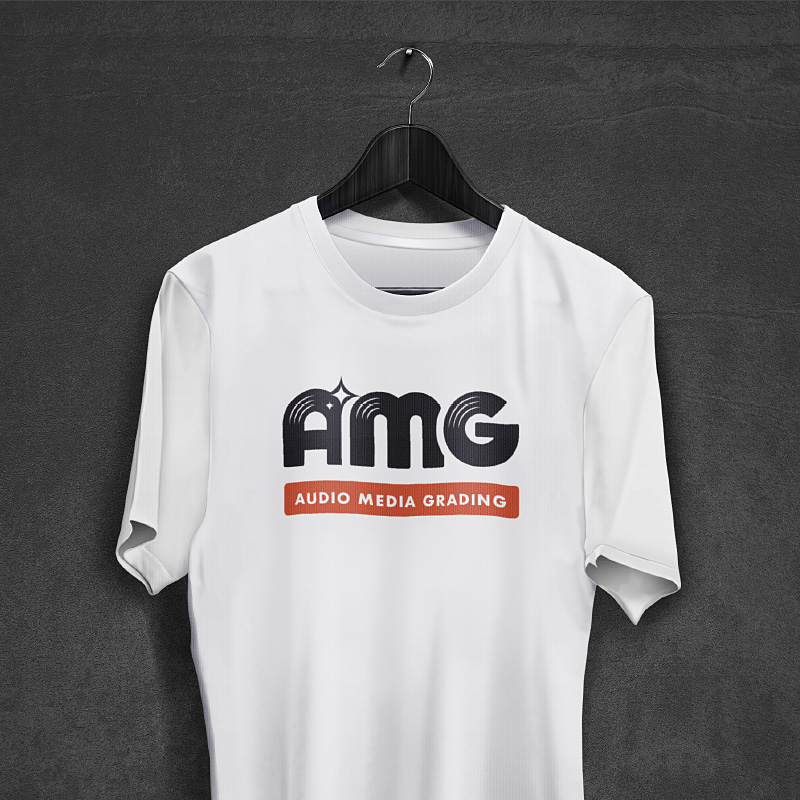
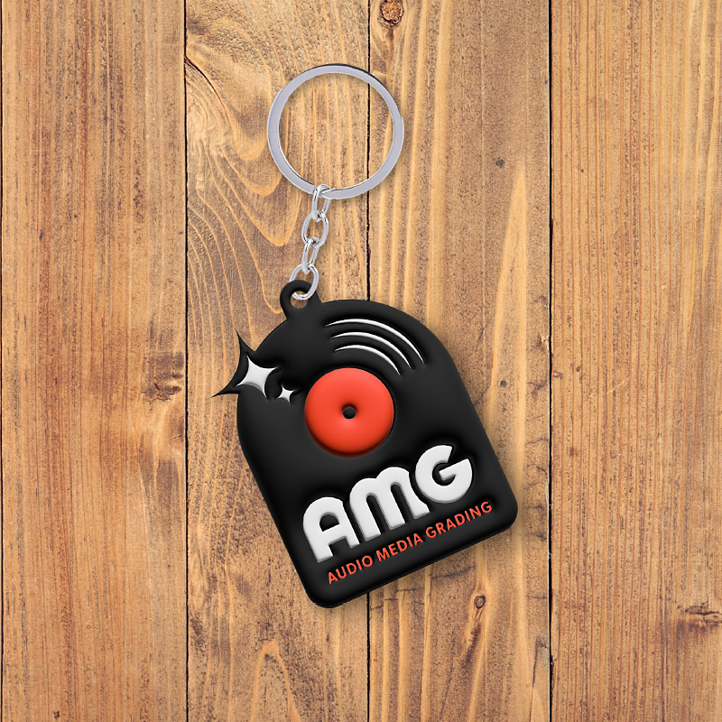
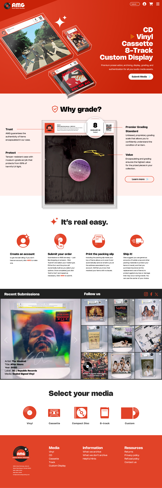
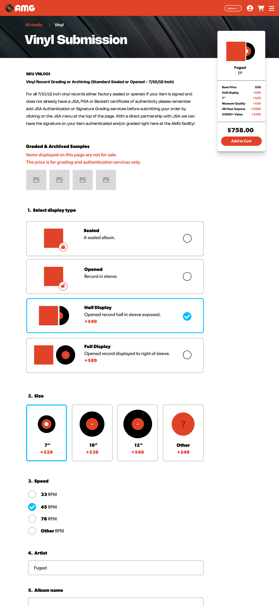

Site design/build and brand refresh of the emergent audio grading platform of renowned DJ and new owner, Steve Aoki.


Brand Refresh
The Color Palette






The Homepage
Opting for a graphic representation of the media cases versus a realistic rendering to showcase in the hero seemed to highlight the media and labeling better. Because all available album art was flat I ended up rendered them isometrically by piecing together found images of album spines and cd and tape cases. In the highlight section that followed the hero I rendered a more realistic styling of the case using a vector format so it was scalable to different media types and also transparent so we could efectively layer it on any background. I also developed coded labels for each media type as well as a holographic emblem for autheticity. The 'Why grade?' section was a clear and concise value proposition for the product, highlighting the essentials, while the subimssion module beneath showcased the simple process.
The team was investing a lot of effort into social media, so I incorporated a section that highlighted their content better. One was programmed via CMS, while the other was auto-generated from instagram. I incorporated a recovery module to cap the page which allowed users to select their media type and funnel them to their chosen submission rather than have them scroll back up, hunting for CTAs.
Media Submission
The existing media submission page was a simple form, no graphics and convoluted in displaying selected options. I solved for this by adding a cart sidebar that progressively updated and tallied as paid features were added. The media image would also update as the.display type was selected. The sidebar scroll locked and followed you down the form, always in view.
